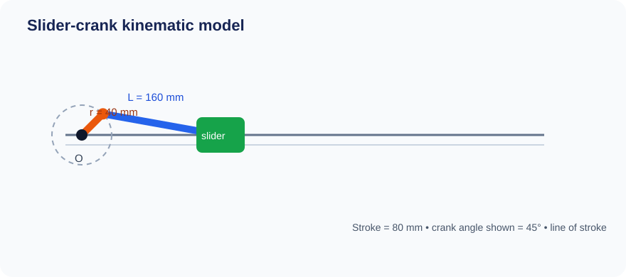
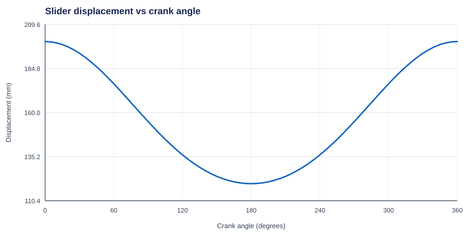
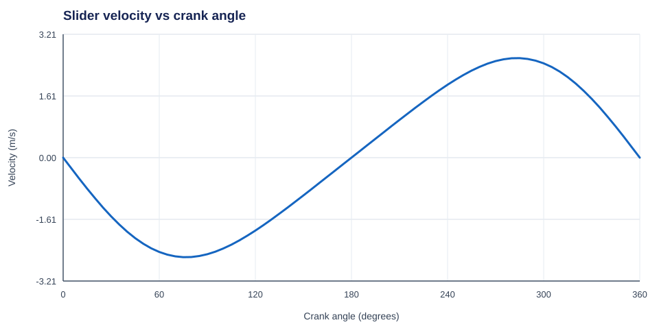
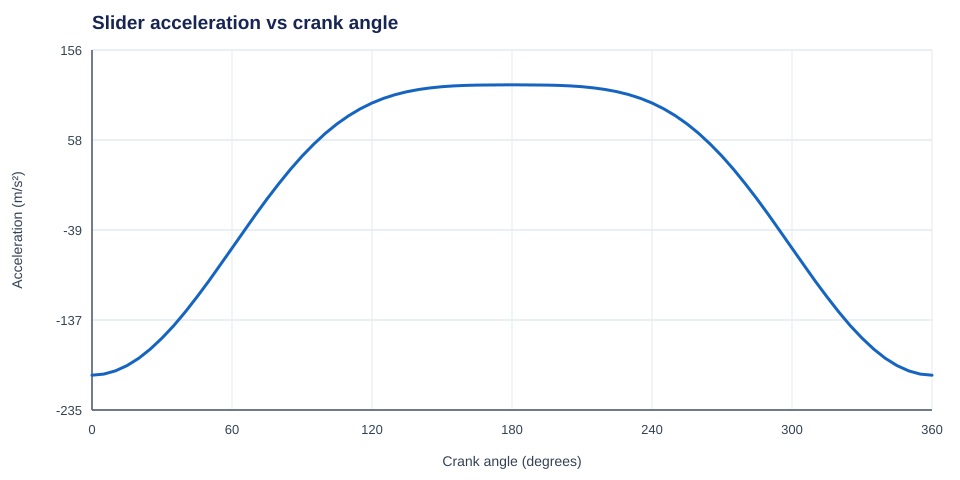
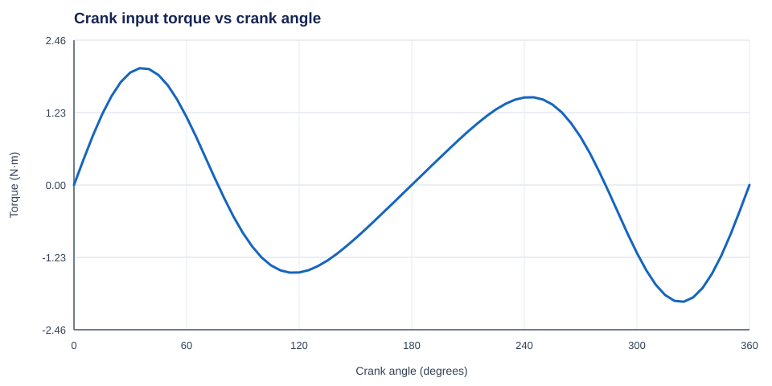

Kinematic and slider-inertia study • 40 mm crank • 160 mm connecting rod • 600 rpm

Model one complete crank revolution and report slider displacement, velocity, acceleration, connecting-rod axial force, and crank input torque. The crank rotates at constant speed and the slider reciprocates along a straight guide.
Planar rigid-link slider-crank geometry is evaluated with the exact closed-form kinematic relation. Crank radius r = 0.040 m, connecting-rod length L = 0.160 m, slider mass m = 0.50 kg, and crank speed n = 600 rpm (ω = 62.832 rad/s). Positive displacement is from crank center toward the outer dead center. The connecting rod and crank are treated as massless; only the slider inertia is included. No external process load, friction, joint clearance, compliance, or flywheel inertia is modeled.
| Output | Minimum | Maximum |
|---|---|---|
| Slider displacement | 120.00 mm | 200.00 mm |
| Slider velocity | -2.591 m/s | 2.591 m/s |
| Slider acceleration | -197.39 m/s² | 118.44 m/s² |
| Drive force on slider (m·a) | -98.70 N | 59.22 N |
| Rod axial force | -98.70 N | 59.22 N |
| Input torque for slider inertia | -1.993 N·m | 1.993 N·m |




Open motion_simulation.html for the animated mechanism and live readouts. motion_results.csv contains one sample every 5°; slider_crank_sim.js regenerates the table, plots, and this report with Node.js.
Task 3 submission • Slider-crank mechanism • SI calculations, displayed in mm where indicated